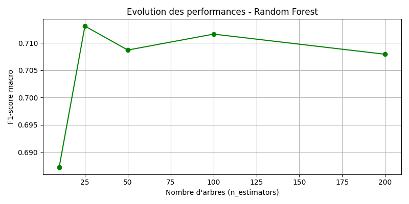

Livrable TP2 — Churn Clients
Mini-Projet IA : Cas A — IBM Telco Customer Churn
Réalisé par Mehdi / B3
📋 1. Cadrage du Projet
| Dimension | Réponse |
|---|---|
| Problème métier | Anticiper quels clients sont sur le point de résilier leur abonnement télécom pour les contacter avec une offre de fidélisation avant qu'ils ne partent. |
| KPI métier | Taux de rétention client. Chaque client retenu = du chiffre d'affaires mensuel récurrent sauvé. |
| Variable cible (y) | Churn → "Yes" (parti = 1) ou "No" (resté = 0). Classification binaire. |
| Type de tâche ML | Classification binaire (2 résultats possibles). |
| Métrique ML principale | F1-macro. L'Accuracy serait trompeuse ici car le dataset est déséquilibré (~26% de churn). Un algo qui dit toujours "il reste" aurait 74% d'accuracy sans rien comprendre. Le F1-macro donne le même poids aux deux classes. |
| Risques identifiés | SeniorCitizen et gender pourraient introduire un biais discriminatoire si le modèle les sur-utilise pour cibler des populations spécifiques. |
| Niveau AI Act | Risque limité. Profilage commercial sans décision impactant directement les droits des personnes. Obligation de transparence quand même. |
❓ Un faux négatif ou un faux positif est-il plus coûteux ?
Le faux négatif est le plus coûteux. L'algo dit "il va rester" mais le client part réellement : on perd le client sans avoir rien tenté. Acquérir un nouveau client coûte 5 à 7x plus cher qu'en garder un. Le faux positif (on envoie une promo à quelqu'un qui serait resté) ne coûte qu'un petit budget marketing, le client reste content.
❓ Quelles populations pourraient être discriminées si le modèle est biaisé ?
Les personnes âgées (
SeniorCitizen) ou les personnes seules (Partner = No) pourraient être systématiquement sur-ciblées par des offres de rétention, constituant du profilage abusif. Il faut surveiller l'impact de ces variables via SHAP.🧹 2. Préparation des Données
❓ Votre dataset est-il équilibré ? Quelle proportion de chaque classe ?
Non, il est déséquilibré : ~74% des clients restent, ~26% partent (Churn=Yes). Sur 7 043 clients, seulement ~1 869 ont churné. C'est pourquoi on utilise un split stratifié (
stratify=y) pour conserver cette proportion dans le train ET le test, et pourquoi le F1-macro est plus adapté que l'Accuracy.❓ Y a-t-il des variables potentiellement sensibles ? Faut-il les exclure ?
Oui :
gender (genre) et SeniorCitizen (personne âgée). On ne les exclut pas d'emblée car elles peuvent avoir une corrélation légitime avec le churn (ex: contrats différents proposés selon l'âge). En revanche, on vérifie via SHAP qu'elles n'apparaissent pas parmi les variables dominantes — ce qui est le cas dans nos résultats, c'est rassurant.❓ Quel prétraitement avez-vous appliqué et pourquoi ?
- Nettoyage de TotalCharges : La colonne contenait des espaces vides (clients récents sans historique de paiement). Conversion forcée en numérique + suppression de 11 lignes vides. Sans ça, le modèle planterait ou se baserait sur des valeurs corrompues.
- One-Hot Encoding (
get_dummies) : Les algorithmes ML ne lisent que des chiffres, pas du texte ("Month-to-month", "Yes"...). On transforme chaque catégorie en colonne binaire 0/1. On passe de 21 à 30 features. - StandardScaler : La Régression Logistique est sensible aux échelles. Une facture mensuelle (50-100€) et une ancienneté (0-72 mois) ne sont pas comparables bruts. Le scaler centre et réduit toutes les variables pour que l'algo traite chaque feature de manière équitable.
🤖 3. Comparaison des 3 Modèles
| Modèle | Accuracy | F1-macro | F1-weighted |
|---|---|---|---|
| Logistic Regression | 80.4% | 0.739 🏆 | 0.800 |
| Random Forest | 78.8% | 0.712 | 0.781 |
| XGBoost | 77.8% | 0.709 | 0.776 |

Graphique comparatif des 3 modèles (Accuracy vs F1-macro)
❓ Quel modèle obtient les meilleures performances sur votre cas ?
La Régression Logistique obtient le meilleur F1-macro (0.739) et la meilleure Accuracy (80.4%). C'est le grand gagnant sur nos données.
❓ La Régression Logistique est-elle compétitive malgré sa simplicité ?
Oui, et même davantage — elle bat les deux modèles "avancés". C'est un phénomène courant quand les données sont bien préparées et que les relations entre variables et cible sont relativement linéaires. La normalisation et l'encodage ont ici particulièrement profité à ce modèle.
❓ Quel modèle choisiriez-vous pour un déploiement en production ? Justifiez.
Choix retenu : Logistic Regression.
- Performance : Meilleur F1-macro. Pas de raison de prendre moins bien.
- Interprétabilité : Les coefficients sont lisibles directement. On peut expliquer à un directeur commercial : "Ce client risque de partir car son contrat mensuel et sa facture élevée pèsent lourd".
- Temps d'inférence : Ultra-rapide (quelques millisecondes par prédiction), idéal pour une API temps-réel qui doit traiter des milliers de clients chaque nuit.
- Coût de maintenance : Modèle simple = peu de paramètres à surveiller, facile à ré-entraîner mensuellement, moins de risque de dérive silencieuse.
📊 4. Évaluation Approfondie

Matrice de confusion — XGBoost

Évolution du F1-macro selon le nombre d'arbres (Random Forest)
❓ Identifiez les faux positifs et faux négatifs dans la matrice de confusion.
- Vrais Négatifs (haut-gauche) : Clients prédits "restants" qui restent réellement. ✅
- Vrais Positifs (bas-droite) : Clients prédits "partants" qui partent réellement. ✅ C'est ce qu'on optimise.
- Faux Positifs (haut-droite) : L'algo dit "il va partir" mais le client serait resté. On lui envoie une promo inutilement. Coût faible.
- Faux Négatifs (bas-gauche) : L'algo dit "il va rester" mais le client part. On ne fait rien et on le perd. Coût maximal : perte de revenus récurrents.
❓ Dans votre contexte métier, lequel est le plus coûteux ? Pourquoi ?
Le Faux Négatif est nettement plus coûteux dans le contexte Churn. Un client perdu représente une perte de revenus mensuels récurrents, et re-acquérir un client équivalent coûte en moyenne 5 à 7x plus cher qu'une action de rétention. On préférerait donc un modèle avec un fort Recall sur la classe "Churn=Yes", quitte à accepter plus de faux positifs (promos envoyées à des clients fidèles).
❓ Votre meilleur modèle est-il suffisant pour un déploiement réel ? Quelles garanties supplémentaires seraient nécessaires ?
Un F1-macro de 0.739 est un bon point de départ mais insuffisant pour une mise en production directe. Les garanties supplémentaires nécessaires seraient :
- Rééquilibrage des classes : Appliquer SMOTE ou
class_weight='balanced'pour améliorer le Recall sur la classe minoritaire. - GridSearchCV : Optimisation systématique des hyperparamètres pour extraire le maximum du modèle.
- Données supplémentaires : Intégrer l'historique d'appels au support, les incidents techniques, les données de navigation — qui sont de meilleurs prédicteurs du mécontentement.
- Monitoring en production : Surveiller la dérive du modèle (data drift) car les comportements clients évoluent.
- Validation humaine : Un conseiller doit valider la liste de clients ciblés avant envoi d'offres.
🔍 5. Explicabilité SHAP

Top 15 des variables les plus influentes (SHAP — Random Forest, classe Churn=Oui)
❓ Quelles sont les 3 variables les plus influentes selon SHAP ?
- Contract_Month-to-month : Un contrat mensuel (sans engagement) est le signal de churn le plus fort. Le client peut partir à tout moment.
- Tenure : L'ancienneté. Un client récent (faible tenure) a beaucoup plus de risque de partir qu'un client fidèle depuis plusieurs années.
- MonthlyCharges : Plus la facture mensuelle est élevée, plus le client est tenté d'aller chercher moins cher chez un concurrent.
❓ Ces variables sont-elles cohérentes avec votre intuition métier ?
Oui, totalement. Ces 3 variables correspondent exactement à ce qu'un commercial télécom identifierait intuitivement comme facteurs de risque : un client sans engagement, peu fidèle, qui paie cher est clairement un profil "à risque". SHAP confirme et quantifie ce que le bon sens suggère.
❓ Si une variable sensible (âge, genre...) apparaît parmi les plus importantes, que faut-il faire ?
Dans nos résultats, ni
gender ni SeniorCitizen n'apparaissent dans le top 15 SHAP, ce qui est rassurant. Mais si c'était le cas, il faudrait : (1) analyser si cette corrélation est une causalité légitime ou un biais historique dans les données, (2) potentiellement exclure la variable et re-entraîner, (3) effectuer un audit d'équité (fairness audit) sur les prédictions par sous-groupe, et (4) documenter la décision dans le registre de traitement RGPD.⚖️ 6. Conformité AI Act & RGPD
| Critère | Analyse |
|---|---|
| Niveau de risque AI Act | Risque limité. Profilage commercial automatisé sans décision ayant un impact juridique ou social direct sur les individus. |
| Justification du niveau | On est dans un cas de CRM/marketing : le modèle ne refuse pas un service, ne note pas une personne pour un crédit, n'intervient pas dans un contexte médical ou judiciaire. L'impact se limite à recevoir ou non une offre commerciale. |
| Base légale RGPD | Intérêt légitime (Art. 6.1.f) : l'opérateur a un intérêt commercial reconnu à fidéliser ses clients. Alternativement applicable : le contrat (Art. 6.1.b) si le client a accepté le traitement de ses données dans les CGV. |
| DPIA requis ? | Oui, recommandé. Le RGPD exige une Analyse d'Impact (DPIA) quand il y a du profilage automatisé à grande échelle. Avec 7 000+ clients, on dépasse le seuil qui déclenche cette obligation pour la CNIL. |
| Explicabilité requise | Requise. Art. 22 RGPD : le client a le droit de demander pourquoi il a été ciblé par une action automatisée. SHAP permet de générer cette explication individuellement. |
| Supervision humaine | Recommandée. Un conseiller commercial devrait valider la liste de clients ciblés avant envoi de campagnes. L'IA propose, l'humain dispose. |
| Audit et traçabilité | Versionner les modèles (ex : MLflow), logger chaque prédiction avec horodatage et version du modèle, archiver le dataset d'entraînement. Indispensable en cas de contrôle CNIL. |
| Droits des personnes | Droit d'accès (savoir qu'on est profilé), droit de rectification (corriger ses données), droit d'opposition (refuser le profilage automatisé, Art. 21 RGPD). |
❓ Votre système nécessite-t-il un audit de conformité avant déploiement ? Par qui ?
Oui. Un audit interne par le DPO (Délégué à la Protection des Données) de l'entreprise est obligatoire. Il doit valider la DPIA, vérifier la base légale et s'assurer que les droits des personnes sont exercables. La CNIL peut ensuite effectuer un contrôle externe à tout moment.
❓ Les personnes affectées ont-elles un droit de recours ?
Oui. Selon l'article 22 du RGPD, tout individu a le droit de ne pas être soumis à une décision fondée exclusivement sur un traitement automatisé. Le client peut : s'opposer au profilage, demander une révision humaine de la décision, et saisir la CNIL en cas de non-réponse de l'entreprise.
❓ Quel organisme de contrôle surveille ce type de système dans votre secteur ?
- CNIL : Autorité de contrôle principale pour les données personnelles et le profilage (RGPD).
- ARCEP : Autorité de régulation des communications électroniques — surveille les pratiques commerciales des opérateurs télécom.
- Futur AI Office européen : Avec l'AI Act pleinement en vigueur d'ici 2026-2027, un organisme européen dédié pourra aussi intervenir sur la transparence et la conformité des systèmes d'IA.